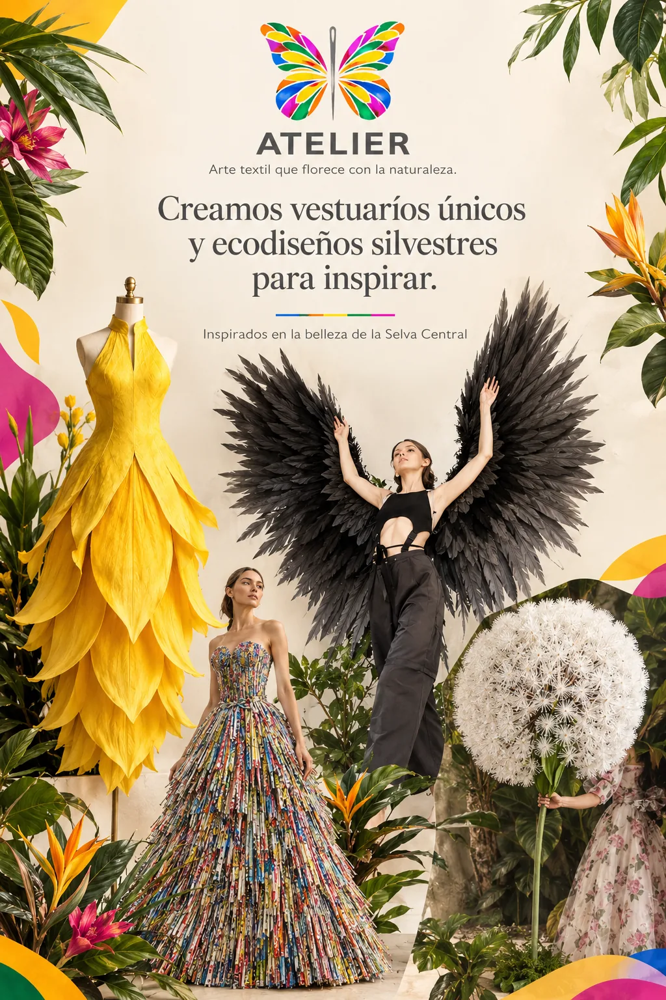
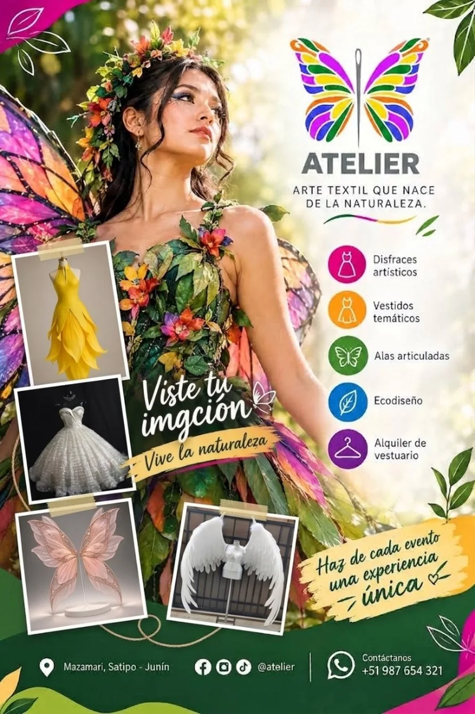

La marca en el mundo
Del taller a cada punto de contacto.
La identidad de Atelier debe conservar su reconocimiento en prendas, etiquetas, uniformes, empaques, afiches, letreros y medios digitales.

La marca en el mundo
Ver el manualMisma esencia en cada punto de contacto.
7.1 – 7.2
Papelería y tarjetas
Membretes, carpeta, sobres, factura y tarjeta de presentación con la línea gráfica formal.

7.5
Pendón y exhibidores
Exhibidores verticales para ferias y eventos con la propuesta de valor.

7.6
Objetos promocionales
Lapiceros, tazas blancas y azules, pines y gorras.

7.7 – 7.8
Carné y uniformes
Credencial vertical y línea de vestimenta: polo staff, polo diseñador, camisa de campo y chaleco.


7.9
Aviso, letrero y local
Señalética, carteles y ambientación de las instalaciones.


Empaque
Empaques y etiquetas
Bolsas, vasos, papel de seda y etiquetas con el imagotipo.

Gráfica
Afiches y volantes
Piezas para redes y para imprimir con la misma paleta.

